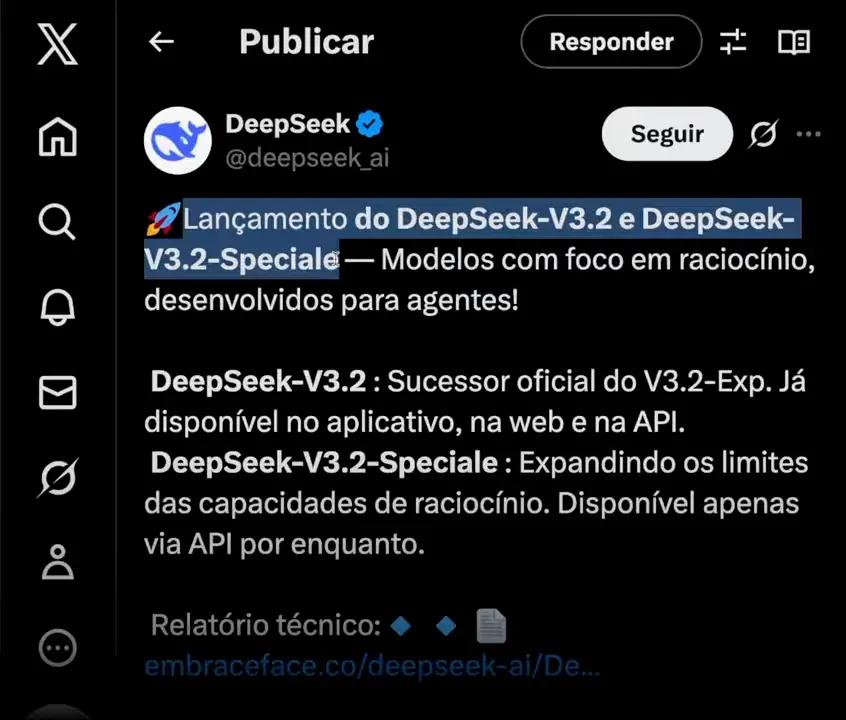
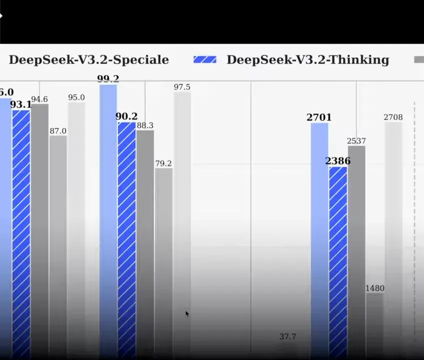
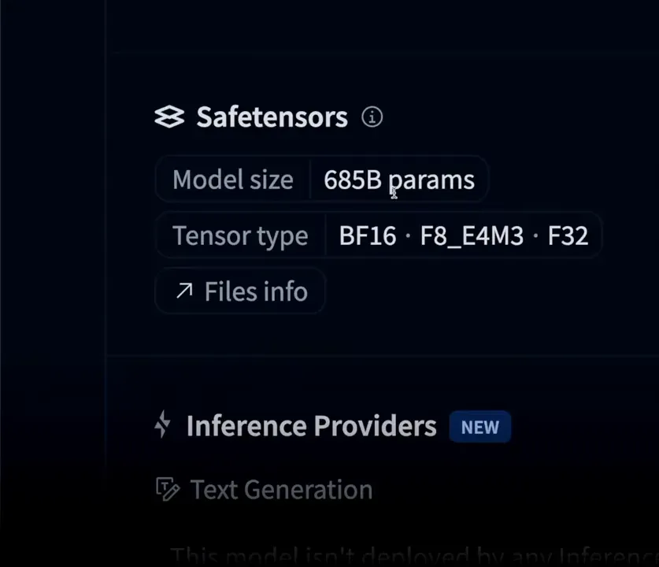
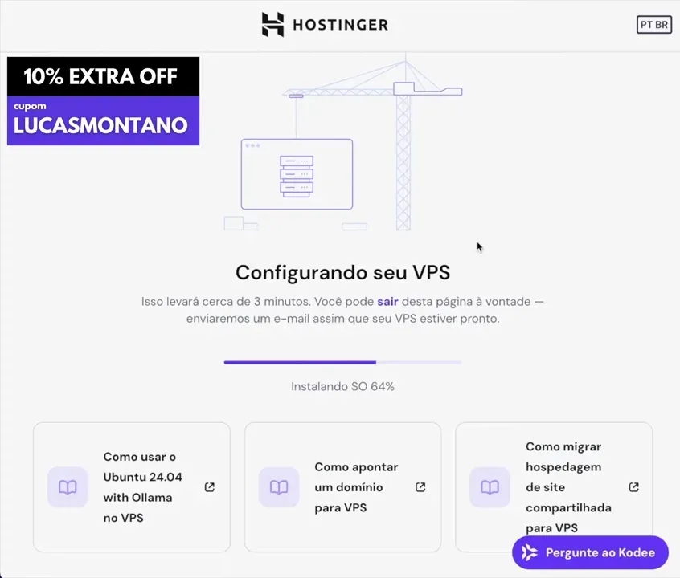
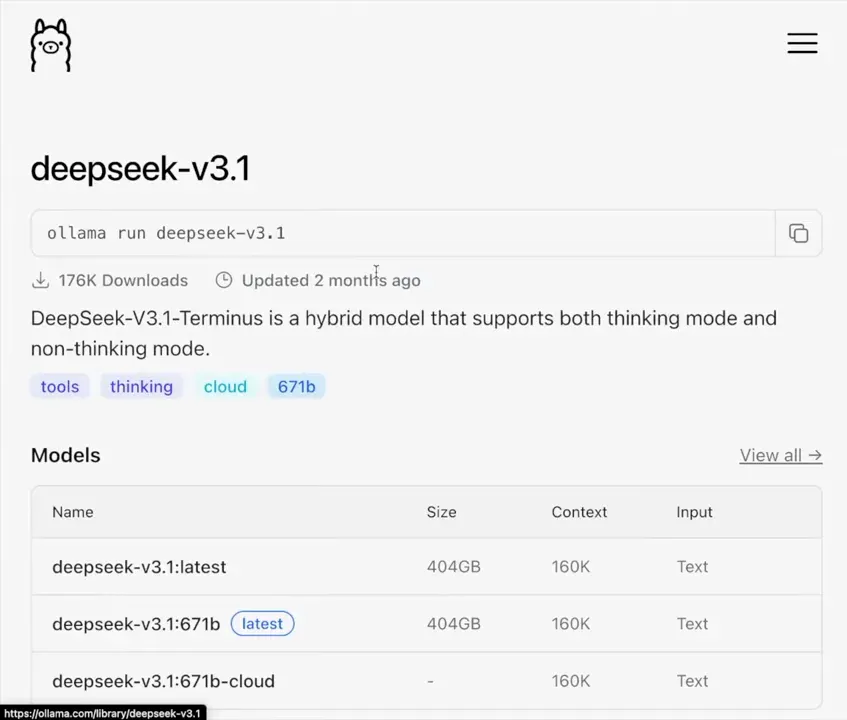
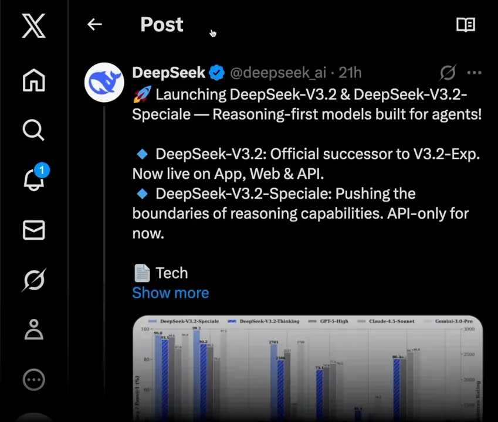
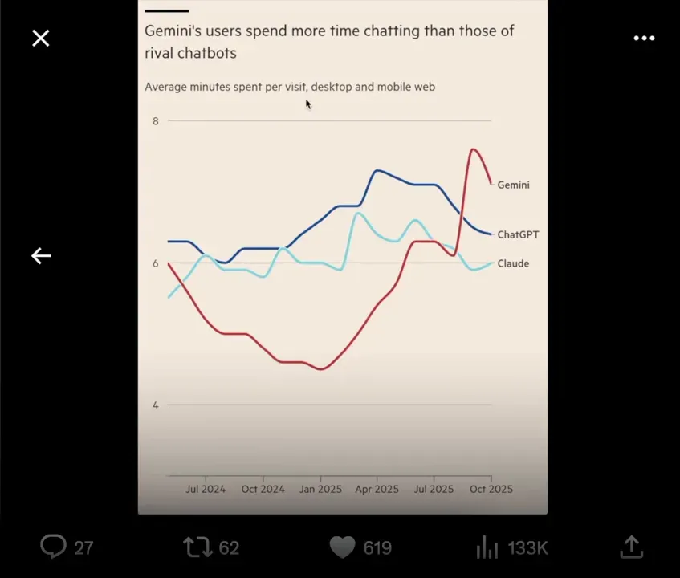
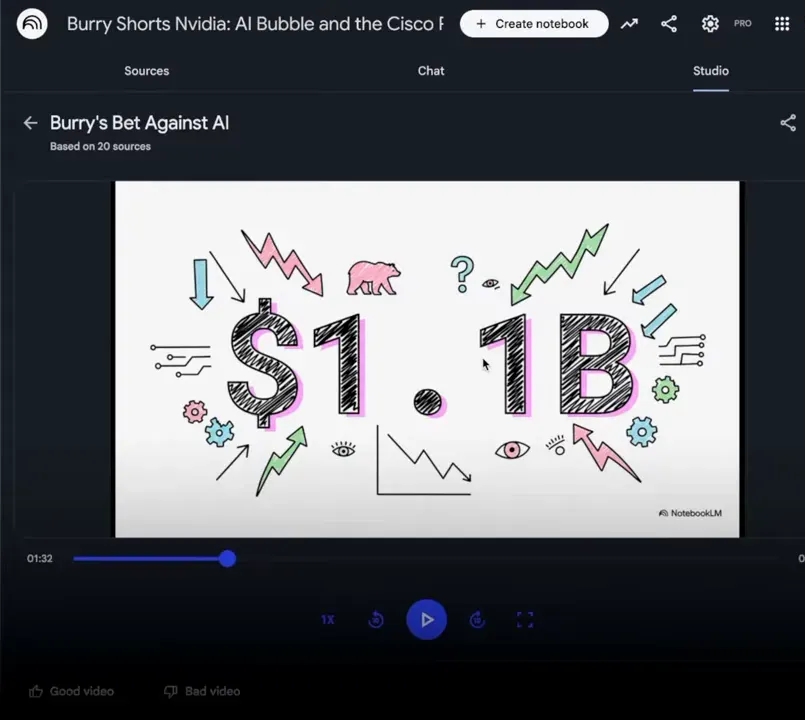

Sumário
- 🚀 O que é o DeepSeek V3.2 e V3.3?
- 🧭 Por que “foco em raciocínio” e “desenvolvidos para agentes” faz diferença?
- 🧮 Benchmarks: por que todo mundo está falando de matemática?
- 🖥️ O peso real: parâmetros, infraestrutura e quem vai rodar isso
- 🛠️ Testando na prática: a tentativa de rodar o DeepSeek na VPS
- 🌍 Impacto estratégico: o que isso significa para startups e para o Vale do Silício?
- ⚖️ O que as big techs estão fazendo e por que isso importa
- 📌 Recomendações práticas: como me preparar e onde focar agora
- ❓ FAQ
- 🔚 Considerações finais
🚀 O que é o DeepSeek V3.2 e V3.3?
O DeepSeek lançou recentemente versões chamadas V3.2 e V3.3, descritas pelos desenvolvedores como “modelos com foco em raciocínio desenvolvidos para agentes”. Em termos práticos, isso significa um esforço explícito em melhorar a capacidade do modelo de pensar em múltiplos passos, planejar ações e interagir com sistemas externos de forma coordenada — exatamente o tipo de comportamento que chamamos de agentes.

A variante DeepSeek V3.2 Speciale já aparece disponível para download em repositórios públicos, e estamos falando de uma arquitetura gigantesca: cerca de 685 bilhões de parâmetros. Para colocar em perspectiva, isso não é um modelo que você roda no seu notebook ou na máquina de desenvolvimento comum. É infra de cluster de GPU, com requisitos de memória e throughput muito altos.
Chamar o DeepSeek de “open weights” é importante. Significa que os pesos do modelo foram liberados para a comunidade — qualquer pessoa ou empresa teoricamente pode baixar, estudar, adaptar e implantar. Mas como veremos, “open” não quer dizer “acessível” em termos práticos para a maioria das pessoas.
🧭 Por que “foco em raciocínio” e “desenvolvidos para agentes” faz diferença?
Raciocínio de múltiplos passos e design orientado a agentes não são buzzwords vazias. Eles representam uma mudança na forma como os LLMs passam a ser usados em produtos reais.
Modelos orientados a raciocínio são treinados e avaliados para inferir cadeias de pensamento, decompor problemas complexos e executar sequências de operações lógicas — o que aumenta a capacidade de automatizar tarefas que exigem planejamento, verificação e tomada de decisão.
Modelos “para agentes” focam em interagir com outros sistemas: APIs, bancos de dados, sistemas de pagamentos, MCPs (provedores de serviços multimodais) e componentes de backend. Isso é crucial para startups que querem transformar um LLM em um produto. Quando uma empresa pega um LLM de base e o envolve com lógica de integração, automação, verificação e segurança, ela está criando propriedade intelectual real — o agente em si é um ativo da empresa.
No meu trabalho como criador do Posterflix, por exemplo, construí um sistema que gera pôsteres com IA e usa agentes para orquestrar toda a criação. Precisamos de uma arquitetura capaz de chamar diferentes modelos e provedores, validar e filtrar imagens geradas, persistir variantes, anotar metadados e aplicar rollback quando uma geração falha ou viola políticas. Agentes fazem exatamente isso: encapsulam fluxos de chamadas, tratam erros, mantêm estado entre passos e automatizam pipelines de criação multimodal. Ter um modelo e fluxo com foco em raciocínio torna todo esse processo mais confiável e escalável.
🧮 Benchmarks: por que todo mundo está falando de matemática?
Uma área onde modelos chineses têm brilhado recentemente é a resolução de problemas matemáticos avançados. O DeepSeek teve desempenhos impressionantes em competições e benchmarks como o AIME 2025 e o HMMT. Esses testes avaliam não só conhecimento factual, mas a capacidade de executar raciocínio estruturado e raciocínio simbólico em nível competitivo.

Nos benchmarks citados, o DeepSeek ultrapassou modelos americanos grandes, incluindo variantes do GPT, Sonnet e Gemini. Além disso, houve menções a premiações em competições internacionais como IMO e CMO. Isso chama atenção porque historicamente houve um gap entre modelos open source e modelos proprietários; ver esse gap se fechar ou até inverter muda a narrativa sobre onde a inovação prática está acontecendo.
Por que matemática importa? Porque problemas matemáticos forçam o modelo a:
- Formalizar raciocínios passo a passo.
- Manter coerência em cadeias longas de dedução.
- Executar aritmética precisa e manipulação simbólica.
Essas capacidades se traduzem diretamente em aplicações práticas: depuração de código, planejamento financeiro e qualquer tarefa que exija raciocínio estruturado.
🖥️ O peso real: parâmetros, infraestrutura e quem vai rodar isso
Ter acesso aos pesos do modelo é diferente de poder rodá-los eficientemente. Um modelo com 685 bilhões de parâmetros exige memória RAM de GPU massiva e interconexão de alta velocidade entre GPUs — estamos falando de infraestrutura de nível de data center com redes NVLink ou equivalente.

Isso altera a dinâmica de quem vai se beneficiar diretamente do DeepSeek. Não serão, na maior parte, usuários finais individuais. Quem vai rodar e comercializar aplicações baseadas nesse modelo são empresas e startups com acesso a infra de nuvem ou a orçamento para clusters dedicados. Para muitos produtos B2C, usar um serviço hospedado (Anthropic, OpenAI, Google) pode continuar sendo mais prático e econômico.
Para mim, por exemplo, trocar o Sonnet ou outro modelo que eu uso por DeepSeek agora não faz sentido por vários motivos:
- Não tenho máquina para rodar o DeepSeek localmente.
- Seria mais caro do que pagar um serviço gerenciado com boa UX e integrações prontas.
- Em tarefas que eu mais uso — desenvolvimento de software, manipulação de terminal, assistente de produtividade — outros modelos se saem melhor hoje.
Essa distinção também explica por que um modelo pode ser revolucionário academicamente sem causar impacto imediato no cotidiano da maioria das pessoas.
🛠️ Testando na prática: a tentativa de rodar o DeepSeek na VPS
Decidi fazer o setup em uma VPS para testar a integração com o Ollama e tentar baixar uma versão disponível do DeepSeek. Usei um provedor com VPS KVM — uma solução prática para quem quer gerenciar servidores sem se preocupar com o hardware físico.

Alguns pontos importantes sobre VPS e configuração:
- Uma VPS é uma partição virtualizada de um servidor físico. Você tem controle total sobre o ambiente e o provedor cuida do hardware.
- Planos mais comuns permitem instalar Ubuntu, Debian e painéis como cPanel, Plesk, Coolify.
- Você pode instalar aplicações prontas, incluindo Docker, Ollama, N8n etc.
Minha intenção era usar o Ollama para gerenciar o modelo localmente. No painel do Ollama, já aparece a possibilidade de adicionar modelos, e ele já tinha listadas versões antigas do DeepSeek como R1 3.1 e V3 2.5. A versão 3.2 ainda não estava disponível no Ollama quando testei, e baixar modelos grandes direto por SSH geralmente leva horas, se não dias, dependendo da largura de banda e do disco.

Tentei puxar a versão 3.1 copiando o nome do repositório para o terminal, mas acabei abortando porque o tempo de download seria muito longo e, além disso, eu queria testar exatamente a V3.2 que tinha acabado de sair. Assim, deixei o processo para outro momento em que eu tenha um plano com mais recursos (um KVM8 ou instância de GPU dedicada).
Se você pretende experimentar por conta própria, seguem recomendações práticas:
- Planeje usar instâncias com GPUs (A100, H100 ou equivalentes) para modelos na faixa de centenas de bilhões de parâmetros.
- Considere quantização: técnicas como 4-bit ou 8-bit quantization reduzem memória e custo, mas exigem testes para manter a qualidade de raciocínio.
- Use ferramentas como Ollama, llama.cpp, GGUF e repositórios da Hugging Face para facilitar o processo, mas verifique compatibilidade e licenças.
- Tenha cuidado com banda e armazenamento: downloads de centenas de GB exigem SSDs rápidos e conexões estáveis.
- Considere começar por versões menores do modelo para validar fluxos de integração antes de migrar para variantes maiores.
🌍 Impacto estratégico: o que isso significa para startups e para o Vale do Silício?
A disponibilidade de modelos chineses open source, como o DeepSeek, altera a equação estratégica para fundadores e engenheiros. Startups que antes precisavam depender de APIs pagas podem agora experimentar modelos de alta qualidade sem custos de licenciamento direto.
Turbine seu Desenvolvimento com Prompts! |
|
Você já sonhou em criar seu próprio aplicativo mas pensou que precisaria ser um gênio da programação? Chegou a hora de transformar esse sonho em realidade! Com as ferramentas no-code de hoje, você pode criar aplicativos profissionais sem escrever uma única linha de código. |
| Quero Profissionalizar meus APPs |
Isso gera duas dinâmicas principais:
- Uma onda de inovação e experimentação em nichos específicos, com equipes construindo agentes, pipelines de dados e integrações para transformar o LLM em produto.
- Uma corrida por propriedade intelectual complementar. Se a base do modelo é comum, a diferenciação passa a ser o agente, a interface, a curadoria de dados, o fine-tuning e a arquitetura de integração.

Há também um risco geopolítico e de longo prazo: se um grande número de startups de ponta começar a depender de infra e modelos desenvolvidos fora dos Estados Unidos, isso pode sinalizar mudanças no ecossistema — não da noite para o dia, mas ao longo de décadas. A China, historicamente, pensa em horizontes longos, e modelos open source gratuitos podem se transformar, via dados e adoção, em vantagem estratégica.
Vale lembrar a máxima: se um produto é gratuito, em algum momento os dados gerados pelos usuários podem ter valor. Para empresas que usam modelos gratuitos em produção, é essencial pensar em governança de dados, compliance e contratos comerciais que protejam propriedade intelectual e privacidade dos usuários.
⚖️ O que as big techs estão fazendo e por que isso importa
Enquanto modelos open source avançam, as big techs não ficam paradas. Há movimento intenso na OpenAI, Google e outras empresas para ajustar produtos, lançar melhorias e capturar usuários por meio de integrações e monetização.

Um ponto que mexe com estratégia é o tempo de sessão: quanto mais tempo um usuário passa em uma plataforma, maior a oportunidade de monetizá-lo por meio de anúncios ou transações. O Gemini, da Google, mostrou um crescimento impressionante de downloads e conseguiu aumentar o tempo de sessão, ultrapassando o GPT em métricas de engajamento por um período. Ferramentas como o Notebook S3 mostram que os produtos do Google estão evoluindo rapidamente para gerar conteúdo multimídia, inclusive vídeos automatizados.

Do lado da OpenAI, a aposta forte é transformar o GPT em uma plataforma de comércio conversacional. Já existem integrações que permitem pesquisar produtos, conversar com agentes das lojas e finalizar pagamentos dentro do próprio chat. Isso é um ataque direto ao modelo de anúncios do Google: para que eu pesquise no buscador e clique em um anúncio se o GPT pode encontrar, comparar e completar a compra por mim?
Monetização por anúncios e transações integradas pode transformar a trajetória financeira dessas empresas. Mesmo com porcentagens baixas de usuários pagantes (o GPT tem taxas de conversão pagas relativamente altas, por volta de 6% em termos públicos), a combinação de assinaturas e receita de anúncios pode criar um motor de receita sustentável.
📌 Recomendações práticas: como me preparar e onde focar agora
Se você é desenvolvedor, fundador ou produto interessado no ecossistema LLM, aqui estão pontos claros e acionáveis para priorizar:
Para quem constrói produtos
- Priorize casos de uso onde agentes trazem diferencial real: automação de workflows, integrações SaaS, assistentes especialistas.
- Invista em pipelines de dados e observabilidade. Quando o modelo é open, o diferencial é o seu dado e como você o usa.
- Teste modelos open source em ambiente controlado, mas mantenha a opção de usar APIs gerenciadas enquanto valida produto e unit economics.
Para times de infra e MLOps
- Planeje arquitetura híbrida: instâncias com GPU para treino/fine-tune e serviços gerenciados para produção quando for mais eficiente.
- Automatize quantização e testes de regressão para garantir que reduções de precisão não quebrem funcionalidades críticas.
- Tenha estratégias de fallback e safety: agentes executando ações no mundo real precisam de verificação humana e limites bem definidos.
Para líderes e estrategistas
- Analise onde a propriedade intelectual real do seu produto está: não é no backbone do LLM, é nos agentes, dados e integrações.
- Considere parcerias com provedores de nuvem e segurança para gerenciar conformidade e custos.
- Monitore movimentos de mercado: releases de modelos, benchmarks e adoção em startups do Vale do Silício são sinais que impactam competitividade.
❓ FAQ
O DeepSeek é gratuito para usar e modificar?
Pesquisas públicas indicam que os pesos de algumas versões do DeepSeek foram disponibilizados como open weights, o que permite baixar e estudar o modelo. No entanto, “gratuito” não elimina custos operacionais: rodar o modelo em produção exige infraestrutura cara e pode implicar acordos de licença ou termos de uso dependendo da fonte.
Posso rodar o DeepSeek em uma VPS comum?
Não de maneira prática. Modelos com centenas de bilhões de parâmetros normalmente exigem GPUs de data center e memória distribuída. VPSs padrão podem funcionar para versões quantizadas ou modelos muito menores, mas para a V3.2 na sua forma completa é recomendado hardware especializado ou instâncias de GPU na nuvem.
Como esse lançamento impacta produtos B2C como assistentes pessoais?
O impacto direto no usuário final pode vir por meio de produtos construídos em cima do modelo. A maioria dos consumidores continuará a usar serviços gerenciados onde a experiência, integrações e UX são melhor trabalhadas. O DeepSeek pode acelerar inovações em backend e agentes que, eventualmente, aparecem em produtos B2C via startups e empresas que o adotarem.
Modelos open source vão superar serviços da OpenAI/Google?
Em capacidade de pesquisa e benchmarks, já há sinais de que modelos open source alcançam ou superam modelos proprietários em certas tarefas. Mas serviços como OpenAI e Google têm produto, integração, latência e redes de distribuição que são difíceis de replicar rapidamente. A competição vai ser por camadas: base de modelo x entrega de produto.
O que significa um modelo ser “desenvolvido para agentes”?
Significa que foi treinado e avaliado visando interações com sistemas externos, planejamento e execução de tarefas automatizadas. O modelo é otimizado para raciocínio longo, manter contexto e agir por meio de integrações, o que facilita a construção de agentes que controlam fluxos, fazem chamadas de API e tomam decisões compostas.
Vale a pena esperar o DeepSeek para o meu produto?
Depende do seu caso. Se seu produto precisa de raciocínio multi-etapa e agentes complexos, vale testar o modelo (ou suas variantes menores). Se seu foco é produtividade pessoal ou automações simples, usar um serviço gerenciado pode ser mais eficiente em custo e tempo. Sempre valide com protótipos antes de migrar toda a stack.
Como reduzir custos ao testar modelos grandes?
Use quantização, execute testes em versões menores do modelo, utilize instâncias spot/interruptíveis na nuvem e faça inferência em lotes quando possível. Ferramentas como Ollama e bibliotecas de quantização ajudam a reduzir memória e custo sem perder muito desempenho.
Existe risco de privacidade ao usar modelos gratuitos?
Sim. Quando você usa serviços gratuitos, os dados gerados e processados podem ser usados para melhorar modelos ou mesmo repassados conforme termos de uso. Em produção, é crucial revisar contratos, implementar anonimização e considerar uso de modelos privados para dados sensíveis.
🔚 Considerações finais
O lançamento do DeepSeek V3.2 e V3.3 é um marco técnico que valida um caminho: modelos open source cada vez mais capazes de raciocínio complexo e prontos para servir como base para agentes. Isso acelera experimentação e abre espaço para startups transformarem esses modelos em produtos com valor real por meio de agentes, integração e dados proprietários.
Ao mesmo tempo, a barreira de infraestrutura permanece um limitador prático. Nem todo mundo terá a capacidade de rodar esses modelos em larga escala, então as big techs e provedores de infra continuam desempenhando papel crítico na democratização de acesso via serviços gerenciados. Para quem constrói, a lição é clara: concentre-se em onde está a sua vantagem competitiva — nos agentes, nos dados, na experiência do usuário e na governança.
Se você está curioso para experimentar, comece com versões menores, teste agentes simples, aprenda a quantização e faça um plano realista de custos. O ecossistema vai se mover rápido nos próximos meses; quem preparar a infraestrutura, a arquitetura e a estratégia de dados terá vantagem.
Quer criar seu produto e não sabe por onde começar? |
|
Já pensou em criar apps incríveis sem precisar ser um gênio da programação? Pois é, eu tô aqui pra te mostrar que é possível, e melhor ainda, é massa demais! E o melhor tudo 100% GRÁTIS. |
| Ver canal no Youtube |